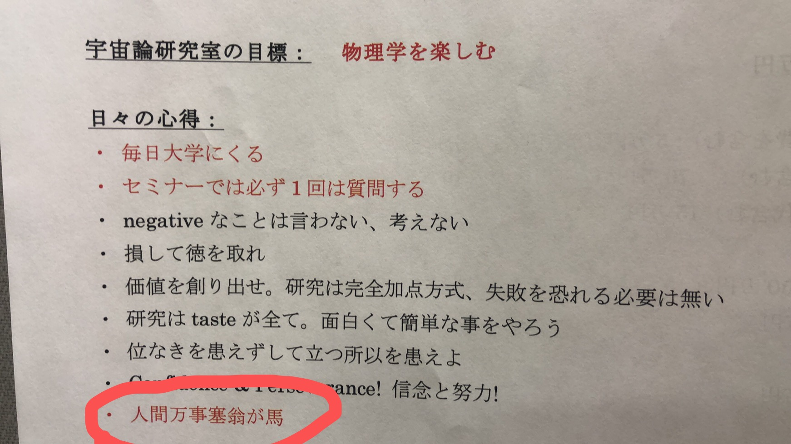

宇宙学
宇宙学是一门物理和天文相互交叉的学科，与天体物理学不同的是，当我们说宇宙学，我们是在说研究宇宙作为一个整体的发展和演化。
硕士后期我对我们现在所处的宇宙的问题产生了浓厚的兴趣，我想尝试通过理论解释我们现实宇宙的各种问题，这与我之前研究的一些结构问性题非常不同。所幸的是，我通过努力申请到了奖学金，来到的早田老师的组里，开始了我宇宙学方面的研究。
由于我担心跨越方向的鸿沟，我选择了有着与高能物理所需相同的基础知识（广义相对论和量子场论）的一个方向，即暴胀理论，这是我感兴趣并且容易入手的问题，以此为契机，去感受宇宙学方面的研究，现在我不止对暴胀，对宇宙学相关的其它问题也很感兴趣。可惜我的博士只有短短的三年，起步较晚也走了不少弯路，但也许就像早田老师最喜欢的谚语所说，「塞翁失马焉知非福」。

↑↑↑ 每个新学年都会收到的研究室简介，这是2021年的